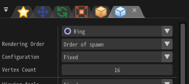

渲染 - 环¶
参数¶

“渲染设置”窗口
渲染顺序¶
设置同一个节点生成的粒子的渲染顺序。选择了“生成顺序”时，第一个生成的粒子被第一个绘制，选择了“倒序”时，第一个生成的粒子被最后绘制。
放置方法¶
设置如何绘制粒子的环。
| 放置方法 | 说明 |
|---|---|
| 告示牌 | 环总是面向摄像机 |
| Z轴旋转告示牌 | 环面向摄像机，但是Z轴被锁定了 |
| 移动方向告示牌 | 环面向摄像机，同时+Y方向朝向移动方向 |
| 固定Y轴 | 环面向摄像机，但是Y轴被锁定了 |
| 固定 | 环将会与粒子的旋转设置一致 |
顶点数量¶
用于显示环形的拐角顶点的数量。拐角数越多，形状就越接近于一个光滑的圆。但也可以通过故意减少角数使其成为一个多边形。
外沿¶
环的外侧形状。X值设置半径。Y值设置高度。
内沿¶
环的内侧形状。X值设置半径。Y值设置高度。
中心比率¶
环的中心部分的位置的比例。如果中心要定位在内侧，设置为0.0。如果中心定位在外侧，则设置为1.0。如果将中心定位在中央，则设置0.5。
外沿颜色¶
环的外侧的颜色。
中心颜色¶
环的中心部分的颜色。
内沿颜色¶
环的外侧的颜色。